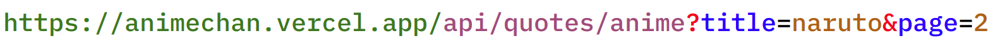

10 擷取網路資料：Web API
10.1 HTTP
- HTTP 是網路上，電腦與電腦 (伺服器) 之間進行溝通時，所遵循的一套規則。當你在瀏覽器當中輸入一個網址 (URL) 時，你的瀏覽器會幫你向位於該 URL 的伺服器發出一個 HTTP request。伺服器收到這個 HTTP request 之後，會解讀它，並依據解讀的結果，向你的電腦送出 HTTP response。若一切正常運作，HTTP response 應會包含你想要的內容 (e.g. 某個網頁)。你的瀏覽器在接收到 HTTP response 之後，會解讀它並將其所包含的內容 (e.g. HTML) (經處理後) 呈現在螢幕上。
Figure 10.1: Hypertext Transfer Protocol (HTTP)
- 通常，我們輸入網址後所收到的內容是 HTML 格式，因此我們在瀏覽器解讀 HTML 後，會在螢幕呈現出一個 (漂亮的) 網頁。但不一定所有網址都會回傳 HTML 的格式，有時候會是其它格式，例如 JSON 格式 (https://api.ratesapi.io/api/latest) 或是
text/plain(https://rlads2019.github.io/hw8/idioms.txt)。這時，瀏覽器上就會呈現出純文字的樣子:
Figure 10.2: JSON shown on Browser
- 伺服器回傳 JSON 格式不是為了 (直接) 給人看的，而是為了方便程式與電腦處理。換言之，位在這個 URL 的伺服器希望使用者透過程式與自己互動，因此它不提供一個漂亮的界面 (i.e. 網頁)，而是提供一個 Web API，讓使用者可以透過程式語言直接取得乾淨、結構化的資料。
10.2 URL 結構
- Web API 的設計常是透過讓使用者在 URL 加上一些訊息 (query string)，藉此得知使用者想取得哪些資料。
- 例如，Foreign exchange rates API 透過使用者在 URL 之後加上的
base=<貨幣>，判斷回傳的資料以何種貨幣作為匯率計算的基準:https://api.ratesapi.io/api/latest?base=USD
- 例如，Foreign exchange rates API 透過使用者在 URL 之後加上的
- URL 當中的 query string 具有一些特殊的結構。query string 讓使用者可以提供一或多個 key-value pairs (需看 API 說明文件)。例如，上方例子中的
base即為 key-value pairs 中的 key，在 key 與 value 之間則用=分隔。詳見下圖的 URL 結構。
Figure 10.3: URL 結構
10.3 httr
Figure 10.4: HTTP with R
我們通常是透過瀏覽器與網路上的其它電腦 (伺服器) 互動 (i.e. 透過瀏覽器發出/接收 HTTP request/response)。但我們也可以透過 R 做到這件事 — 套件
httr即提供一些函數方便在 R 裡面處理 HTTP request/response。-
下方，我們使用
httr::GET()向https://api.ratesapi.io/api/latest?base=USD&symbols=JPY發出 HTTP request，以取得最新的匯率資料:library(httr) library(magrittr) # https://api.ratesapi.io/api/latest?base=USD&symbols=JPY resp <- GET('https://api.ratesapi.io/', path = 'api/latest', query = list(base = "USD", symbols = "JPY"))-
雖然我們可以將整個 URL 以字串的形式寫在
httr::GET()的第一個 argument，但我們通常會將 URL 拆開成 base URL, path 以及 query string 這三個部份 (見上 URL 結構)，再透過httr::GET()所提供的一些 argument 組出完整的 URL24:-
url(first arg.): URL 中的 base URL，即上圖綠色部份https://api.ratesapi.io/ -
path: URL 中的 path，即上圖紫色部份api/latest -
query: URL 中的 query string。在httr::GET()中，query 是以list的資料結構提供。上方的 URL 因為有兩個 key-value pairs，所以query這個 argument 也由兩個元素 (皆有 name) 組成。
-
-
-
httr::GET()會將 HTTP request 以及接收到的 HTTP response 轉換成 R 的物件。例如，resp$url可以取得 HTTP request 目的地 URL，resp$status_code則可以看到 request 是否成功 (2** 代表 request 成功，4** 代表失敗)：resp$url#> [1] "https://api.ratesapi.io/api/latest?base=USD&symbols=JPY"resp$status_code#> [1] 200 -
若要取得 HTTP response 的內容，可使用
httr::content()。若 response 的內容格式是 JSON，XML 或 HTML，httr::content()會自動將其轉換成 R 的物件，若不想自動進行這件事，可加入as = "text"這個 argument：content(resp)#> $base #> [1] "USD" #> #> $rates #> $rates$JPY #> [1] 109.2881 #> #> #> $date #> [1] "2021-05-14"#> {"base":"USD","rates":{"JPY":109.2881300008},"date":"2021-05-14"}
10.3.1 HTTP request methods
HTTP request 有許多不同的「種類」，稱為 request methods。最常見的一種即是 GET method，例如在網頁輸入 URL 或是剛剛使用的 httr::GET()， 都是在向伺服器發出 GET request。GET request 的目的是向伺服器取得資料。另一種常見的 request method 是 POST。POST request 的目的是向伺服器提交資料，常見的例子是「帳號登入」與「填寫表單」。關於 HTTP request methods 可見 https://developer.mozilla.org/en-US/docs/Web/HTTP/Methods。
10.4 JSON
JSON 是一種純文字格式，跟
.csv一樣是用來記錄結構化資訊的一種格式。但 JSON 可以記錄結構複雜許多的資料，因為它可以具有階層 (巢狀) 結構。-
JSON 所記錄的資料，結構上與 R 的 list 非常接近。下圖左邊的 R 程式碼所建立出的 list，其所表徵的資料結構等價於右方的 JSON:

-
在 R 裡面，可以使用
jsonlite套件協助處理 JSON。例如，jsonlite::fromJSON()可將符合 JSON 格式的字串轉換成 R 的 list (反之，使用jsonlite::toJSON()):json_str1 = '{ "name": "美髮", "subscriptionCount": 1838, "subscribed": false, "topics": ["剪髮","染髮","洗髮"], "postThumbnail": { "size": null } }' jsonlite::fromJSON(json_str1, simplifyVector = F)#> $name #> [1] "美髮" #> #> $subscriptionCount #> [1] 1838 #> #> $subscribed #> [1] FALSE #> #> $topics #> $topics[[1]] #> [1] "剪髮" #> #> $topics[[2]] #> [1] "染髮" #> #> $topics[[3]] #> [1] "洗髮" #> #> #> $postThumbnail #> $postThumbnail$size #> NULL
-
10.4.1 Format
-
通常，JSON 格式是以
{開頭，以}結尾 (有時是[與])。在{與}之間，是由一個個key:valuepair 所組成，每個 key-value pair 之間以,分隔。key 的形式一定是字串，而 value 可為：- 字串、數值、布林值、
null - 或是一個以
{}包裹的 key-value pairs (i.e., 可具有巢狀結構)
- 字串、數值、布林值、
-
在 JSON 格式裡，
{}之內的 key-value pair 並無次序關係。若需要表徵先後次序，需使用 array:[]。在[]中，可以放入任意數量以及各個類別的資料 (彼此以,分隔)，例如：{ "id": "rlads2019", "array1": [1.1, "a string", false], "array2": [2, {"id":1234}, null] }